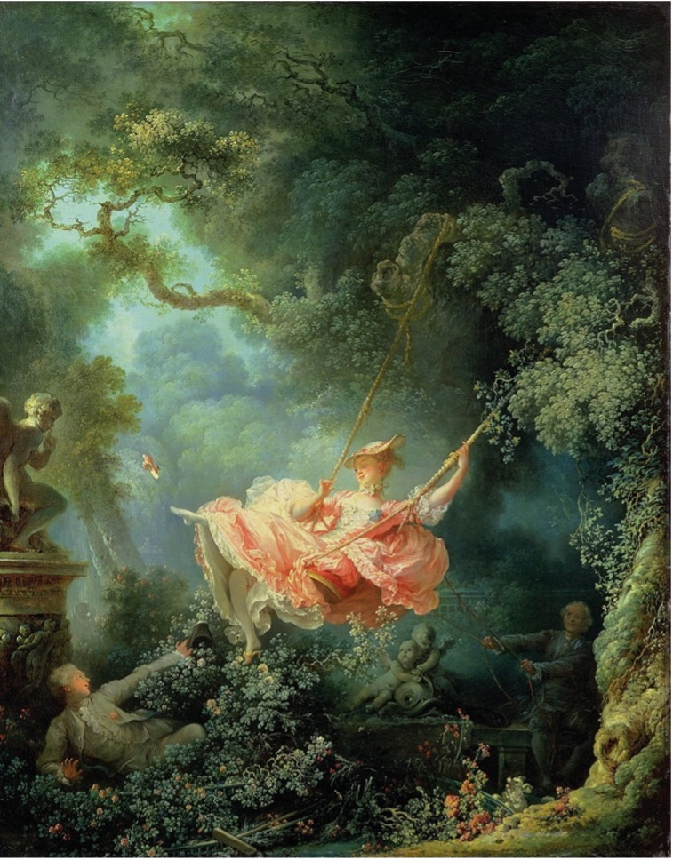
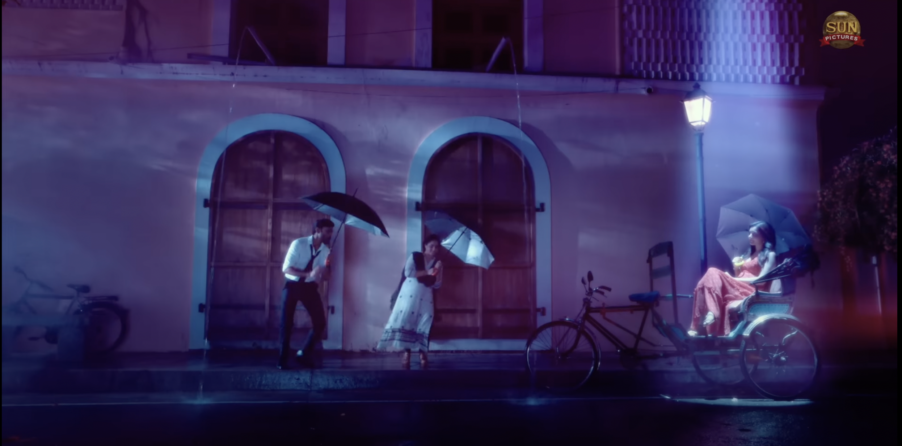
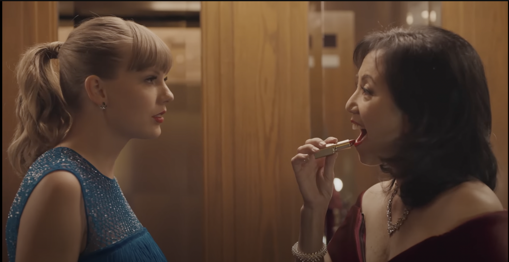

Feel my Rhythm by Red Velvet
Music Video 1
“Feel My Rhythm” is the South Korean girl group Red Velvet’s most recent musical release. The group has a long history starting in 2014 and it shines through beautifully in their latest release, giving their listeners the poppy vibe they crave while maintain a classy image. Fans reached a consensus on this next installation of the red velvet music series, 4th ReVe album in the ReVe festival series. The song samples a classical piece, Air on the G String (Benjamin, Billboard). The piece was made an altered, lowered version made in 1871, of Bach’s original composition in 1724.

Figure 1- 0:04 in the music video Feel my Rhythm by Velvet.
Though a little more investigating I uncovered the painting Irene cosplays, The Swing by Jean-Honoré Fragonard (Grotzi). The Swing was brought to the world in 1767 and it belongs to the rococo art movement. Rococo originated in France, the message of the style is against the monarchy and advocates the celebration of nature-oriented lifestyle. The painting has a woman in a large and puffy gown while swinging in nature, she kicks off her shoe as a man pushed her. She appears happy and satisfied with the place she is in, truly embracing the message of rococo.
Figure 2- The Swing by Jean Honoré Fragonard (1767)
Applying the parallel nature of objects and subjects to Feel my Rhythm makes us curious of the relationship between the art and artist. Looking at the parallels between the two, painting and music video, brings forth a message about the song. The song’s lyrics talk about embracing nature and the natural flow of emotions while enjoying the feeling of young love: “Follow the song and dance to the moonlight”.
The mixing of all the paintings brings forward a state of chaos even with Red Velvet not being active in the frame. They are observing their setting and yet they are blending into their background with ease. They become both objects of nature with still being subjects with their own consciences. Yet to further another observation they are blending two forms of art to create a third new identity. They refuse to use only music video elements or only art strokes, rather combining them consistently. This creates a third individual identity for the music video to stand out from others. The individual style reflects the lyrics as well, where the people are clearly making their own mark on nature while attempting to enjoy it as a whole.
Megham Karukatha by Danush
Music Video 2
The next music video is a recent favorite of mine, a modern Tamil music video. It, to me, presents, a mixture of cultures. The relationship between the characters of this song and the setting represents a mixture between American and Indian cultures. The jazz inspired music plays while three characters of Indian descent, one in a kurtha (traditional Indian clothing), one in a white button down and one in a red dress, dance.
The song “Megham Karukatha” is by Anirudh and Dhanush, the song is from the 2022 movie Thiru. Megham Karukatha focuses on the main character Thiru and his relationship to his best friend, Shobana, and his long-time crush, Anusha. The song follows Thiru and Shobana as they dance in the night streets, painting a picture adjacent a musical. It takes place after his date with Anusha, and he describes to Shobana how Anusha makes him feel. What makes this song relevant to this essay, however, is the interesting use of a spotlight. The spotlight included in the video creates a unique relationship between character and setting.
The song “Megham Karukatha” is by Anirudh and Dhanush, the song is from the 2022 movie Thiru. Megham Karukatha focuses on the main character Thiru and his relationship to his best friend, Shobana, and his long-time crush, Anusha. The song follows Thiru and Shobana as they dance in the night streets, painting a picture adjacent a musical. It takes place after his date with Anusha, and he describes to Shobana how Anusha makes him feel. What makes this song relevant to this essay, however, is the interesting use of a spotlight. The spotlight included in the video creates a unique relationship between character and setting.
Figure 3- 0:46 in Megham Karukatha; Thiru, Anusha Dancing in spotlight
However, there are factors we have not factored in yet. In this music video, Anusha is not present physically, Thiru is simply imagining her presence. To Shobana it seems as if Thiru is dancing alone, in the dark. The light does not also just focus on the dancers, it shifts to follow only Anusha and leaves Thiru with Shobana in the dark.

Figure 4- 1:48 in Megham Karukatha
Well, this setting definitely places an emphasis on Anusha existing in the frame. Despite her being placed further from the center, she draws the eye due to the spotlight. While the other two can blend in easily, unless they are by association in the spotlight as well. The setting is partially made of the buildings and the mise en scene could include both Thiru and Shobana as well. Thiru in relation to his surrounding could bring to us a visual representation on how he views himself. In the film, he considers himself a lost and unaccomplished man who pursues the girl of his dreams, a bit out of reach. This is easily shown to us, with Thiru wandering between the spotlight and out, his want to reach for his dreams, but the reality that holds him down.
Delicate by taylor swift
Music Video 3
With this final music video, I’m choosing a popular and well-known music video. Taylor Swift’s “Delicate”, is a music video that explores her real-life relationships with a artistic lens. In the video she dances by herself, invisible to others’ eyes. Swift is handed a sparkling note which causes her to disappear. She removes her shoes and rips her dress before dancing around the building. This change in her costume can represent her cutting herself free form the norms she must follow in her normal life. This follows her song’s lyrics as she attempts to start a relationship with someone who is not famous, difficult when she has rules about bodyguards, fashion and where she can be. Her struggle with her career and her relationships is showcased in a creative manner.
Figure 6- 2:40 in Delicate by Taylor Swift